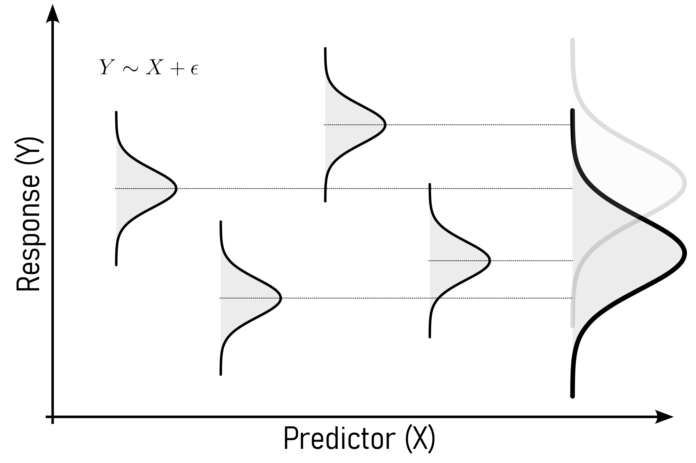
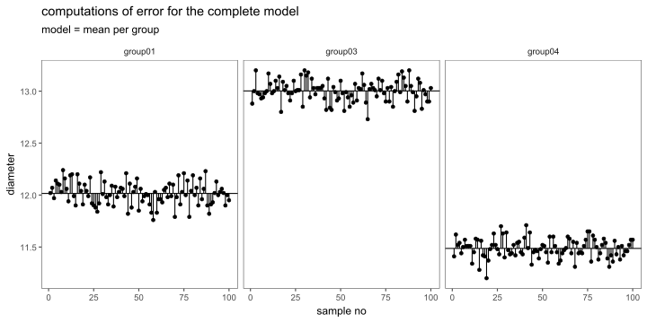
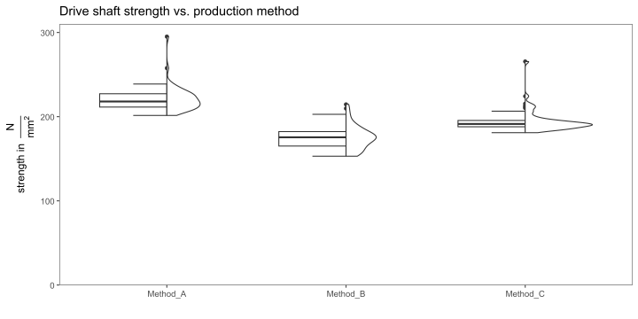

Inferential Statistics
Hypothesis Testing - Basics

Figure 1: We are hypotheses.
Statistical errors

Figure 2: The statistical Errors (Type I and Type II).
Significance

Figure 3: Type I and Type II error in the context of inferential statistics.
Confidence Interval (CI)

Figure 4: Point estimates vs. confidence intervals (Ismay and Kim 2019).
Example: The Coin Toss
Define \(H_0\) and \(H_a\)
H0: The coin is fair and lands heads \(50\%\) of the time.
Ha: The coin is loaded and lands heads more than \(50\%\) of the time.
Power computation for \(n = 10,20,30,50\) with \(\alpha = 0.05\)
Define the test statistic
For a binomial test, the test statistic is the number of head \(X\) under \(H_0\), \(X \sim \text{Binomial}(n,0.5)\)
Critical Value
Reject \(H_0\) if \(x\geq c\), where \(c\) is the smallest integer such that
\[P(X\geq c) | H_0) \leq \alpha\]
Power calculation
\[\text{Power} = P(X\geq c|H_1)\]
Power vs. sample size

Figure 7: The power vs. the sample size
Power and the different parameters

Figure 8: The power vs. the sample size for different effect sizes
Plotting Points

Figure 10: The QQ points as calculated before.
Perfect Normal Distribution

Figure 11: A perfect normal distribution would be indicated if all points would fall on this straight line.
QQ plot with probabilities

Figure 12: A QQ Plot with the assigned probabilities on the axis
Confidence Interval

Figure 13: The QQ plot with confidence bands.
Quantitative Methods

Figure 15: A visualisation of the KS test using the 10 datapoints from before
Test 1 Variable

Figure 17: Statistical tests for one variable.
Compute the p-value
\[P(Z>1.28) = 1-P(Z\leq 1.28)\approx 1-0.8997 = 0.1003\]

Figure 18: The z-test statistic
One sample Wilcoxon test
- Normal Usage
- Misalignment
- Lack of Lubrication
- Contamination
- Extreme Operating Conditions

| group | statistic | p.value | alternative |
|---|---|---|---|
| group | t_tidy_p.value | wilcox_tidy_p.value |
|---|---|---|
Test 2 Variable (Qualitative or Quantitative)

Figure 21: Statistical tests for two variables.
Correlation

Figure 22: Correlation between two variables and the quantification thereof.
Pearson Corrrelation
The pearson correlation coefficient is a normalized version of the covariance.
Covariance is a measure of joint variability.
Covariance is a generalized formulation of the variance.
You and your friend are swinging back and forth.
When you swing forward, your friend also swings forward.
When you swing backward, your friend also swings backward.
You’re moving together — that’s like positive covariance.
When you swing forward, this friend swings backward.
When you swing backward, they swing forward.
Now you’re moving in opposite directions — that’s like negative covariance.
Sometimes you go forward, and they go backward.
Other times, they go forward, and you go backward.
No pattern at all.
That means no covariance — you’re not moving together in any consistent way.
Covariance is a number that tells us:
How two things change together.
If they both go up or down at the same time (positive covariance).
If one goes up while the other goes down (negative covariance).
Or if they don’t match at all (covariance near zero).
\[\begin{align} \mathrm{Cov}(X,Y) = \frac{1}{n}\sum{(X_i - \bar{X})(Y_i - \bar{Y})} \end{align}\]
| Temperature in °C | Rod Length in mm |
|---|---|
| 20 | 100.2 |
| 22 | 100.5 |
| 24 | 100.9 |
| 26 | 101.3 |
| 28 | 101.6 |
computing means
\[\begin{align} \bar{X} = \frac{20+22+24+26+28}{5} = 24 \end{align}\]
\[\begin{align} \bar{X} = \frac{100.2+100.5+100.9+101.3+101.6}{5} = 100.9 \end{align}\]
| Temperature in °C | Rod Length in mm | $X_i - \bar{X}$ | $Y_i - \bar{Y}$ | $(X_i - \bar{X}) \cdot (Y_i - \bar{Y})$ |
|---|---|---|---|---|
| 20 | 100.2 | -4 | -0.7 | 2.8 |
| 22 | 100.5 | -2 | -0.4 | 0.8 |
| 24 | 100.9 | 0 | 0.0 | 0.0 |
| 26 | 101.3 | 2 | 0.4 | 0.8 |
| 28 | 101.6 | 4 | 0.7 | 2.8 |
Sum the products
\[\begin{align} \sum(X_i - \bar{X})(Y_i - \bar{Y}) = 2.8 + 0.8 + 0 + 0.8 + 2.8 = 7.2 \end{align}\]
Compute Covariance
\[\begin{align} \mathrm{Cov}(X,Y) = \frac{7.2}{5} = 1.44 \end{align}\]
Interpretation:
- Covariance \(= 1.44\;°C\cdot mm\)
- It’s positive, meaning:
- When the machine runs hotter, the rods are longer (thermal expansion)
- It’s not standardized
- The number \(1.44\) is not “large” or “small” until compared with variance or a correlation is computed
- \((X_i-\bar{X}) \rightarrow\) How different is this temperature from average?
- \((Y_i-\bar{Y}) \rightarrow\) How different is this rod length from average?
- Multiply them:
- Positive \(x\) Positive \(\rightarrow\) rods are longer at higher temp \(\rightarrow\) \(+\) contribution
- Negative \(x\) Negative \(\rightarrow\) rods are shorter at lower temp \(\rightarrow\) \(+\) contribution
- Different signs \(\rightarrow\) one high, one low \(\rightarrow\) \(-\) contribution
\[\begin{align} R = \frac{\mathrm{Cov}(X,Y)}{\sigma_x \sigma_y} \end{align}\]
- Covariance is sensitive to scale (\(mm\) vs. \(cm\))
- Pearson correlation removes units, allowing for meaningful comparisons across datasets

Pearson's product-moment correlation
data: drive_shaft_rpm_dia$rpm and drive_shaft_rpm_dia$diameter
t = 67.895, df = 498, p-value < 2.2e-16
alternative hypothesis: true correlation is not equal to 0
95 percent confidence interval:
0.9406732 0.9578924
sample estimates:
cor
0.95 Spearman Correlation
The spearman correlation coefficient (\(\rho\)) is based on the pearson correlation, but applied to ranked data
A rank is a position number assigned to an item in a sorted list. It tells you where the item stands relative to others.
| Name | Height in cm | rank |
|---|---|---|
| Alice | 160 | 1 |
| Bob | 165 | 2 |
| Clara | 170 | 3 |
| David | 175 | 4 |
| Elena | 180 | 5 |
| Observation | Temperature in °C | Rod Length in mm | Comment |
|---|---|---|---|
| 1 | 20 | 100.2 | normal |
| 2 | 22 | 100.4 | normal |
| 3 | 24 | 100.7 | normal |
| 4 | 26 | 101.0 | normal |
| 5 | 28 | 101.3 | normal |
| 6 | 30 | 110.0 | steep increase |
| 7 | 32 | 120.0 | very steep |
| 8 | 34 | 130.0 | extreme |
| Obersvation | Temperature in °C | Rod Length in mm | Comment | Rank $X$ | Rank $Y$ | $d = R_X-R_Y$ | $d^2$ |
|---|---|---|---|---|---|---|---|
| 1 | 20 | 100.2 | normal | 1 | 1 | 0 | 0 |
| 2 | 22 | 100.4 | normal | 2 | 2 | 0 | 0 |
| 3 | 24 | 100.7 | normal | 3 | 3 | 0 | 0 |
| 4 | 26 | 101.0 | normal | 4 | 4 | 0 | 0 |
| 5 | 28 | 101.3 | normal | 5 | 5 | 0 | 0 |
| 6 | 30 | 110.0 | steep increase | 6 | 6 | 0 | 0 |
| 7 | 32 | 120.0 | very steep | 7 | 7 | 0 | 0 |
| 8 | 34 | 130.0 | extreme | 8 | 8 | 0 | 0 |
\[\begin{align} \rho = 1- \frac{6\sum{d^2}}{n(n^2-1)} = 1 - \frac{0}{8(64-1)} = 1 \end{align}\]
Pearson correlation:
\(R = 0.86\)

The spearman \(\rho\) calculates the pearson correlation, but between the rank difference of the variables.
| Part | Meaning |
|---|---|
| \(\sum d_i^2\) | Total squared difference in ranks (rank disagreement) |
| \(6\) | Derived from algebraic simplification of Pearson’s r using rank variance |
| \(n(n^2 - 1)\) | Comes from variance of ranks and number of comparisons |
| \(1 - \text{fraction}\) | Ensures perfect agreement yields \(\rho = 1\); increasing \(d_i^2\) lowers \(\rho\) |

Correlation - methodogical limits
| dataset | mean_x | mean_y | std_dev_x | std_dev_y | corr_x_y |
|---|---|---|---|---|---|

Test 2 Variables (2 Groups)

Figure 29: Statistical tests for two variable.
Test for equal variance (homoscedasticity)

Figure 30: The variances (\(sd^2\)) for the drive shaft data.
t-test for independent samples
- Null Hypothesis: The means of the two samples are equal.
- Prerequisites:
- Independence
- Normal Distribution
- Number of groups \(=2\)
- equal Variances of the groups
First, the variances are compared in order to check if they are equal using the F-Test (as described in Section 12.1.1).
F test to compare two variances
data: group01 %>% pull("diameter") and group03 %>% pull("diameter")
F = 1.1817, num df = 99, denom df = 99, p-value = 0.4076
alternative hypothesis: true ratio of variances is not equal to 1
95 percent confidence interval:
0.7951211 1.7563357
sample estimates:
ratio of variances
1.181736 With \(p>\alpha = 0.05\) the \(H_0\) is accepted, the variances are equal.
The next step is to check the data for normality using the KS-test (as described in Section 9.2).
Asymptotic one-sample Kolmogorov-Smirnov test
data: group01 %>% pull("diameter")
D = 0.048142, p-value = 0.9746
alternative hypothesis: two-sided
Asymptotic one-sample Kolmogorov-Smirnov test
data: group03 %>% pull("diameter")
D = 0.074644, p-value = 0.6332
alternative hypothesis: two-sidedWith \(p>\alpha = 0.05\) the \(H_0\) is accepted, the data seems to be normally distributed.

The formal test is then carried out. With \(p<\alpha=0.05\) \(H_0\) is rejected, the data comes from populations with different means.
Two Sample t-test
data: group01 %>% pull(diameter) and group03 %>% pull(diameter)
t = -65.167, df = 198, p-value < 2.2e-16
alternative hypothesis: true difference in means is not equal to 0
95 percent confidence interval:
-1.0164554 -0.9567446
sample estimates:
mean of x mean of y
12.0155 13.0021 Welch t-test for independent samples
- Null Hypothesis: The means of the two samples are equal.
- Prerequisites:
- Independence
- Normal Distribution
- Number of groups \(=2\)
First, the variances are compared in order to check if they are equal using the F-Test (as described in Section 12.1.1).
F test to compare two variances
data: group01 %>% pull("diameter") and group02 %>% pull("diameter")
F = 0.34904, num df = 99, denom df = 99, p-value = 3.223e-07
alternative hypothesis: true ratio of variances is not equal to 1
95 percent confidence interval:
0.2348504 0.5187589
sample estimates:
ratio of variances
0.3490426 With \(p<\alpha = 0.05\) \(H_0\) is rejected and \(H_a\) is accepted. The variances are different.
Using the KS-test (see Section 9.2) the data is checked for normality.
Asymptotic one-sample Kolmogorov-Smirnov test
data: group01 %>% pull("diameter")
D = 0.048142, p-value = 0.9746
alternative hypothesis: two-sided
Asymptotic one-sample Kolmogorov-Smirnov test
data: group02 %>% pull("diameter")
D = 0.067403, p-value = 0.7539
alternative hypothesis: two-sidedWith \(p>\alpha = 0.05\) \(H_0\) is accepted, the data seems to be normally distributed.

Then, the formal test is carried out.
Welch Two Sample t-test
data: group01 %>% pull(diameter) and group02 %>% pull(diameter)
t = -15.887, df = 160.61, p-value < 2.2e-16
alternative hypothesis: true difference in means is not equal to 0
95 percent confidence interval:
-0.3912592 -0.3047408
sample estimates:
mean of x mean of y
12.0155 12.3635 With \(p<\alpha = 0.05\) we reject \(H_0\), the data seems to be coming from different population means, even though the variances are overlapping (and different).
t-test for paired samples
- Null Hypothesis: True mean difference is not equal to 0.
- Prerequisites:
- Paired Data
- Normal Distribution
- equal variances
- Number of groups \(=2\)
Using the F-Test, the variances are compared.
F test to compare two variances
data: diameter by timepoint
F = 1, num df = 9, denom df = 9, p-value = 1
alternative hypothesis: true ratio of variances is not equal to 1
95 percent confidence interval:
0.2483859 4.0259942
sample estimates:
ratio of variances
1 With \(p>\alpha = 0.05\) \(H_0\) is accepted, the variances are equal.
Using a QQ-plot the data is checked for normality.


The formal test is then carried out.
# A tibble: 1 × 8
.y. group1 group2 n1 n2 statistic df p
* <chr> <chr> <chr> <int> <int> <dbl> <dbl> <dbl>
1 diameter t0 t1 10 10 -13.4 9 0.000000296With \(p<\alpha = 0.05\) \(H_0\) is rejected, the treatment changed the properties of the product.
Wilcoxon signed rank test
- Null Hypothesis: True mean difference is not equal to 0.
- Prerequisites:
- Paired Data
- Number of groups \(=2\)


# A tibble: 1 × 7
.y. group1 group2 n1 n2 statistic p
* <chr> <chr> <chr> <int> <int> <dbl> <dbl>
1 diameter t0 t1 20 20 25 0.00169
Analysis of Variance (ANOVA) - Basic Idea

Figure 37: The basic idea of an ANOVA.
One-way ANOVA
- Null Hypothesis: True mean difference is equal to 0.
- Prerequisites:
- equal variances
- Number of groups \(>2\)
- One response, one predictor variable

The most important prerequisite for a One-way ANOVA are equal variances. Because there are more than two groups, the Bartlett test (as introduced in Section 12.1.2) is chosen (data is normally distributed).
Bartlett test of homogeneity of variances
data: diameter by group
Bartlett's K-squared = 275.61, df = 4, p-value < 2.2e-16Because \(p<\alpha = 0.05\) the variances are different.
Bartlett test of homogeneity of variances
data: diameter by group
Bartlett's K-squared = 2.7239, df = 2, p-value = 0.2562With \(p>\alpha=0.05\) \(H_0\) is accepted, the variances of group01, group02 and group03 are equal.
Of course, many software package provide an automated way of performing a One-way ANOVA, but the first will be explained in detail. The general model for a One-way ANOVA is shown in \(\eqref{onewayanova}\).
\[\begin{align} Y \sim X + \epsilon \label{onewayanova} \end{align}\]
- \(H_0\): All population means are equal.
- \(H_a\): Not all population means are equal.
For a One-way ANOVA the predictor variable \(X\) is the mean (\(\bar{x}\)) of all datapoints \(x_i\).

| sse | df | n | p | mse |
|---|---|---|---|---|
Then, the SSE and the MSE is calculated for the reduced model (\(H_0\) is true). In the reduced model, the mean is not calculated per group, the overall mean is calculated (results in Table 27).
| sse | df | n | p | mse |
|---|---|---|---|---|
The \(SSE\), \(df\) and \(MSE\) explained by the complete model are calculated:
\[\begin{align} SSE_{explained} &= SSE_{reduced}-SSE_{complete} = 118.36 \\ df_{explained} &= df_{reduced} - df_{complete} = 2 \\ MSE_{explained} &= \frac{SSE_{explained}}{df_{explained}} = 59.18 \end{align}\]
The ratio of the variance (MSE) as explained by the complete model to the reduced model is then calculated. The probability of this statistic is afterwards calculated (if \(H_0\) is true).
[1] 2.762026e-236The probability of a F-statistic with \(pf = 5579.207\) is \(0\).
A crosscheck with a automated solution (aov-function) yields the results shown in Table 28.
| term | df | sumsq | meansq | statistic | p.value |
|---|---|---|---|---|---|
Some sanity checks are of course required to ensure the validity of the results. First, the variance of the residuals must be equal along the groups (see Figure 43).
Also, the residuals from the model must be normally distributed (see Figure 44).
The model seems to be valid (equal variances of residuals, normal distributed residuals).
With \(p<\alpha = 0.05\) \(H_0\) can be rejected, the means come from different populations.

Kruskal Wallis

- Method A: baseline material
- Method B: different geometry
- Method C: different material

Kruskal-Wallis rank sum test
data: strength by group
Kruskal-Wallis chi-squared = 107.65, df = 2, p-value < 2.2e-16
Pairwise comparisons using Wilcoxon rank sum test with continuity correction
data: kw_shaft_data$strength and kw_shaft_data$group
Method_A Method_B
Method_B < 2e-16 -
Method_C 6.8e-14 2.0e-10
P value adjustment method: bonferroni Because \(p<\alpha = 0.05\) it can be concluded, that all means are different from each other.
repeated measures ANOVA

First, outliers are identified. There is no strict rule to identify outliers, in this case a classical measure is applied according to \(\eqref{outlierrule}\)
\[\begin{align} \text{outlier} &= \begin{cases} x_i & >Q3 + 1.5 \cdot IQR \\ x_i & <Q1 - 1.5 \cdot IQR \end{cases} \label{outlierrule} \end{align}\]
# A tibble: 1 × 5
timepoint Subject_ID diameter is.outlier is.extreme
<chr> <fct> <dbl> <lgl> <lgl>
1 After_Inspection 15 12.9 TRUE FALSE A check for normality is done employing the Shapiro-Wilk test (Shapiro and Wilk 1965).
| timepoint | variable | statistic | p |
|---|---|---|---|
Effect W p p<.05
1 timepoint 0.927 0.524 With \(p>\alpha = 0.05\) \(H_0\) is accepted, the variances are equal. Otherwise sphericity corrections must be applied (Greenhouse and Geisser 1959).
| Effect | DFn | DFd | F | p | p<.05 | ges |
|---|---|---|---|---|---|---|
With \(p<\alpha = 0.05\) \(H_0\) is rejected, the different timepoints yield different diameters. Which groups are different is then determined using a post-hoc test, including a correction for the significance level (Bonferroni 1936).
| group1 | group2 | n1 | n2 | statistic | df | p | p.adj | signif |
|---|---|---|---|---|---|---|---|---|
with \(p<\alpha = 0.05\) \(H_0\) is rejected for the comparison Before_Machining - After_Machining and After_Inspection - Before_Machining. It can therefore be concluded that the machining has a significant influence on the diameter, whereas the inspection has none.